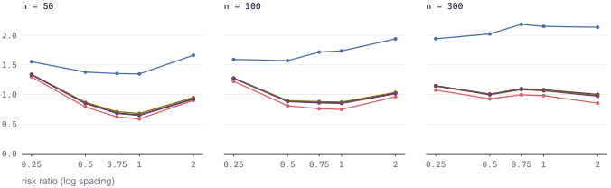

study 05 · argument rr_to_or · 15 conditions · 1,000 replications each
Converting a reported risk ratio to an odds ratio requires a
baseline risk the source study usually does not give. This study varies the true
baseline risk and the value assumed in its place, and asks what the substitution
costs.
What the current view shows
Mean root mean squared error is smallest for
dipietrantonj (0.903) and largest for
vanderweele_rr_squared (1.753). The remaining three
routes fall between them, within 0.017 of one another — a gap this view
cannot test.1
The ordering by RMSE and the ordering by bias disagree.
vanderweele_rr_squared has the smallest mean
absolute bias of the five (0.292) alongside the largest RMSE, because its
replication-to-replication variability is roughly twice that of the others
(empirical SE 1.696 against 0.759 to 0.852). Closer on average, much less
dependable on any one study.
Every route reports a model standard error near twice the empirical one and
covers the population parameter 99.2% to 100% of the time against a nominal
95%.2 These intervals are too wide rather
than well calibrated.

Figure 1. Root mean squared error against the true risk
ratio, by sample size. Colours are the routes listed below; the table is the
legend. Panels share a vertical scale.
Performance by route
Averaged over the 15 conditions shown, ordered by mean RMSE.
Worst is the least favourable single condition, not the average.
Route
Mean RMSE
Worst
Mean |bias|
Empirical SE
SE ratio
Coverage
Width
dipietrantonj
0.903
1.299
0.363
0.759
1.77
0.992
5.01
transpose
0.971
1.336
0.365
0.829
2.13
0.999
6.43
grant
0.981
1.338
0.365
0.841
2.27
0.999
6.90
metaumbrella
0.988
1.340
0.360
0.852
1.86
0.998
5.91
vanderweele_rr_squared
1.753
2.186
0.292
1.696
2.07
1.000
12.87
Source05_rr_to_or_nrep1000.csv, aggregated
2026‑07‑31 ·
Measures after Morris, White & Crowther (2019) ·
Produced byrun_study(), which calls
metaConvert directly; no formula is reimplemented for the simulation.